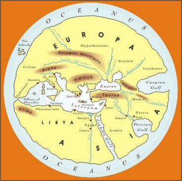
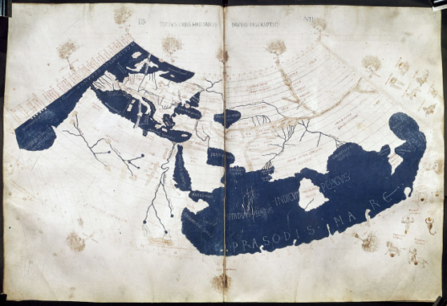
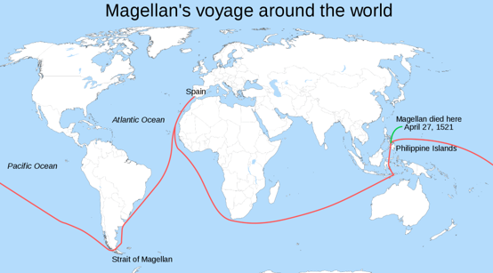
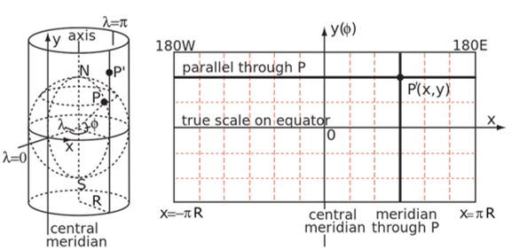
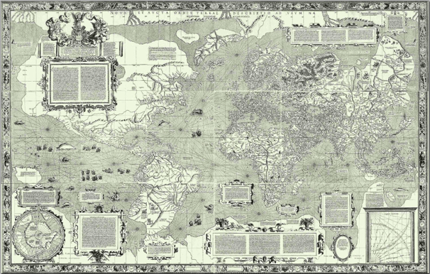

Exploration spurred the cartographic advances
Trade and travel expanded conceptualizations of what the world was.
-Greeks built on knowledge of the Egyptians & Mesopotamians

Ptolemy’s Geographia – 1850 BP.
-8 Volume GIS prototype
-Index of place names
-Projected world Map!! (Underestimated Size)

Chinese Exploration
Advances in Maritime Technology
-Compass
-Ship Design
Culminated in the Ming Dynasty Treasure Voyages
Chinese Exploration
By 600 BP, the Chinese had mapped most of South & East Asia, East Africa, Indonesia & Australia. They may have even visited the west coast of North America!
Spread of Information
Technology and cartographic understanding spread westward.
By 550 BP. Europeans had the compass

"Age of Discovery"
Portuguese and Spanish expansion
-First verifiable global circumnavigations
-European perspectives came to dominate the cartographic world<

The Mercator Projection
Revolutionized mapping and navigation. You can follow constant bearing and reach any location on earth


The Mercator Projection
Mercator projection is still widely used today. This projection severely distorts the true size of some regions.
The Mercator Projection
Mercator projection is still widely used today. This projection severely distorts the true size of some regions.
Map Projections
As our representation of space became more accurate and precise, humans could navigate more effectively.
Our ability to make spatial inferences expanded as well.